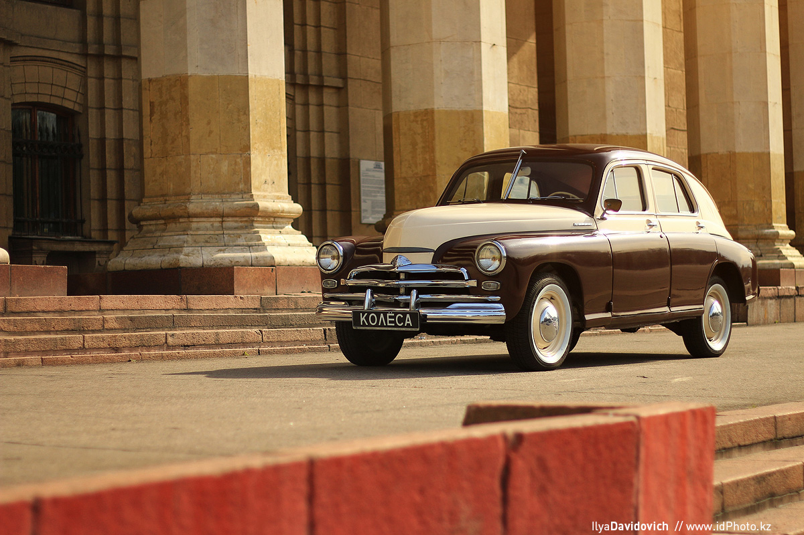

ГАЗ М-20 «Побе́да» — советский легковой автомобиль среднего класса, серийно производившийся на Горьковском автомобильном заводе (ГАЗ) в 1946—1958 годах.
Заводской индекс модели — М-20. Легковой автомобиль представляет собой третье поколение легковых машин ГАЗ, является преемником модели М-1. 28 июня 1946 года начался серийный выпуск автомобилей «Победа». Всего до 31 мая 1958 года было выпущено 241 497 машин.
В начале февраля 1943 года, когда стало ясно, что СССР победит в Великой Отечественной войне, в Москве состоялось собрание, посвященное разработке нового легкового автомобиля.19 июня 1945 года, после прохождения государственных приёмочных испытаний, предсерийные экземпляры «Победы» были продемонстрированы в Москве высшему государственному и партийному руководству во главе с Иосифом Сталиным.Существует версия, что автомобиль хотели назвать «Родина», но когда в июне 1944 года Сталину показали образец будущего серийного автомобиля, тот спросил: «И почём мы будем Родину продавать?». Тогда Сталину сообщили второй вариант названия ПОБЕДА, который был одобрен.


19 июня 1945 года готовый ГАЗ М-20 был представлен самому вождю Сталину. Глянув на этот автомобиль, у Сталина не возникло никаких эмоций. Он лишь скептически добавил: “Надо принять машину с четверкой, машина хорошая”. Аргументировал он это тем, что такой автомобиль склоняется к модели высокого класса, который не очень бы был приемлем для обычных граждан. Но именно убеждения Липгарта по поводу того, что машина очень экономна, по сравнению с другими, дали свои плоды и вождь разрешил пускать в производство Победу.
ГАЗ М20 на первый взгляд казался обычным автомобилем, нацеленным удовлетворить средний класс населения. Но стоит только поближе осмотреть дизайн "Победы", как сразу же находишь все новые и новые детали, которые в совокупности формируют весьма насыщенный и яркий внешний вид.
Из удобств в автомобиле разве что передний диван с регулировкой вперед-назад, ветровое стекло, которое приподнимается для вентиляции, пепельница и прикуриватель.
Панель приборов ГАЗ-М1 выглядела по тем временам не только современной, но и элегантной.Общая стилистика панели «эмки» повторяла фордовскую, модели 1934 года. Но приборы на советской машине иные, без американских овальных элементов.
Обивка салона выполнена из шинельного сукна чаще всего серого или темно коричневого цвета. Отопителя в салоне не предусмотрено, поэтому зимой передвигаться на большие расстояния проблематично, хотя сукно все же помогает сохранять тепло в салоне.


На ГАЗе в то время не было возможности запустить и освоить производство мотора V8, поэтому на машины устанавливали более простой и дешевый 4 цилиндровый мотор.
Важно, что двигатель V8 не имел большого превосходства над 4 цилиндровым. Объем двигателя 3,6 и 3,5 литра, мощность 65 и 50 л.с соответственно. Поэтому принятое на ГАЗе решение – выпускать машину с более простым мотором вполне оправдано.
Газ М1 с двигателем V8 все же выпускался. Восьмицилиндровый двигатель устанавливали на машины для нужд НКВД.
Четырехцилиндровый двигатель Газ-А модернизировали по образу Model B. Оснастка для изготовления мотора была полностью советской.В отличии от Ford у которого двигатель был жестко закреплен на раме, советские инженеры разработали плавающую подвеску на резиновых подушках благодаря чему удалось существенно снизить передающуюся вибрацию.
В дальнейшем этот двигатель устанавливали на грузовики Газ-АА, ММ и их модификации.
 ГАЗ М-20
ГАЗ М-20